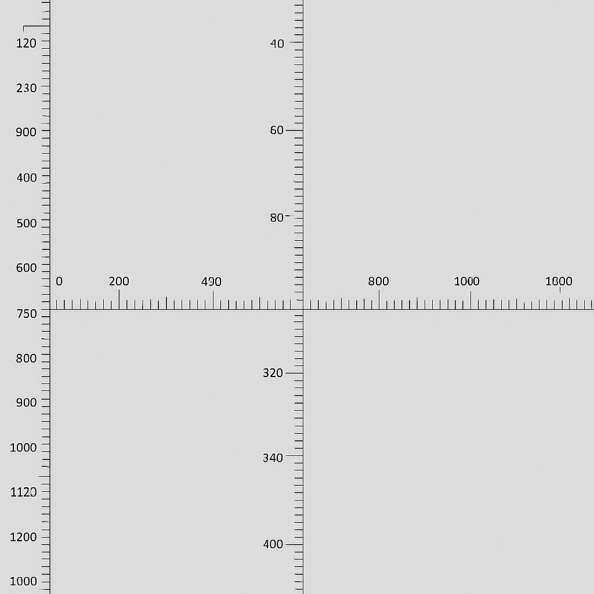
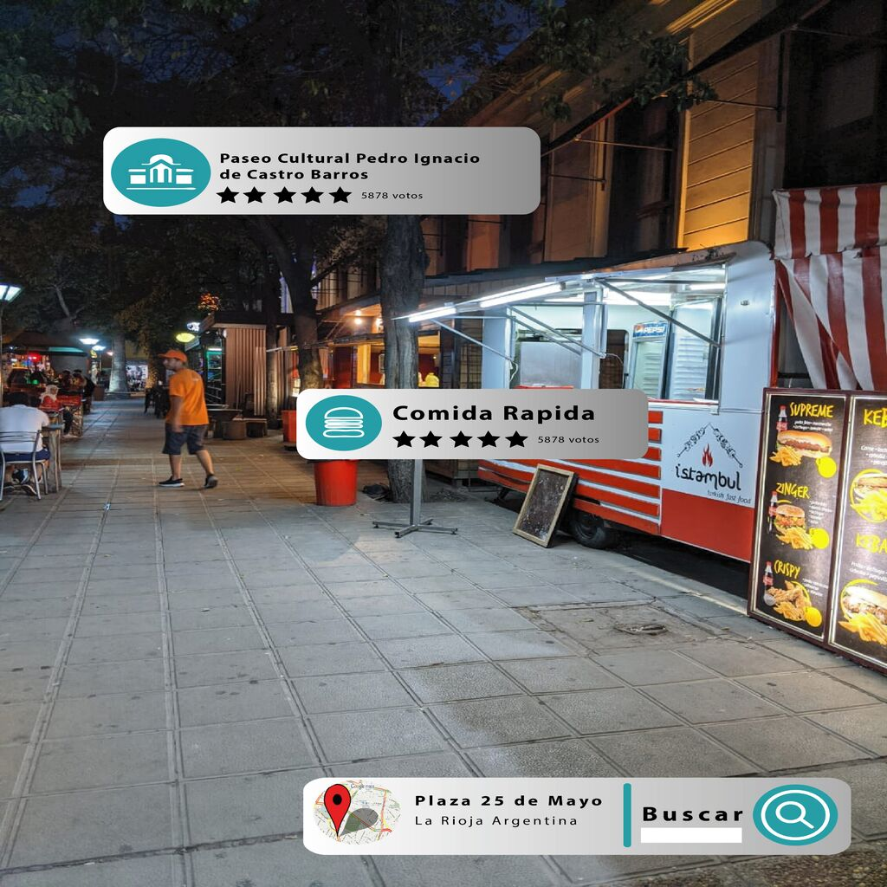
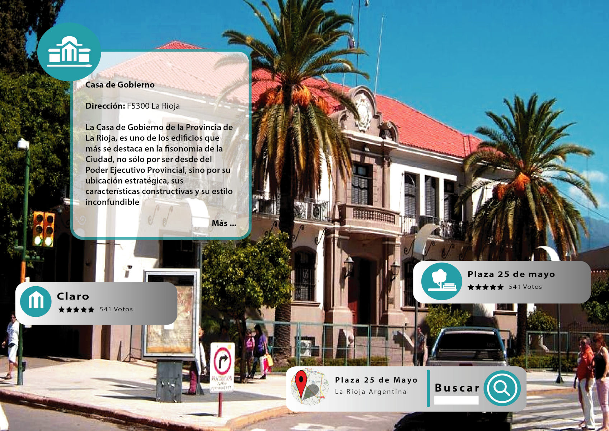
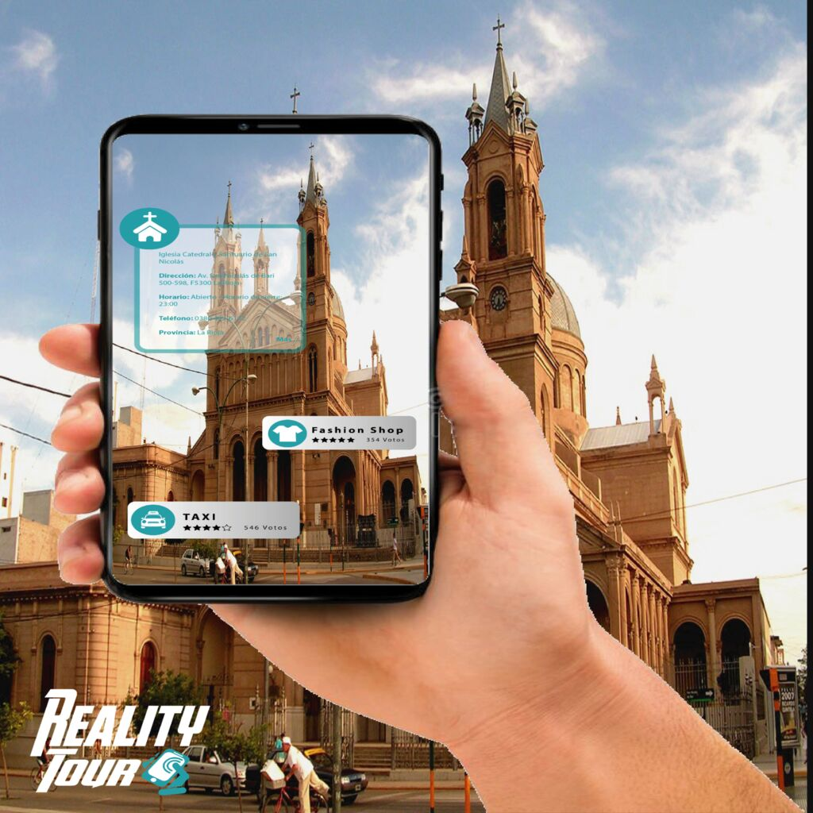
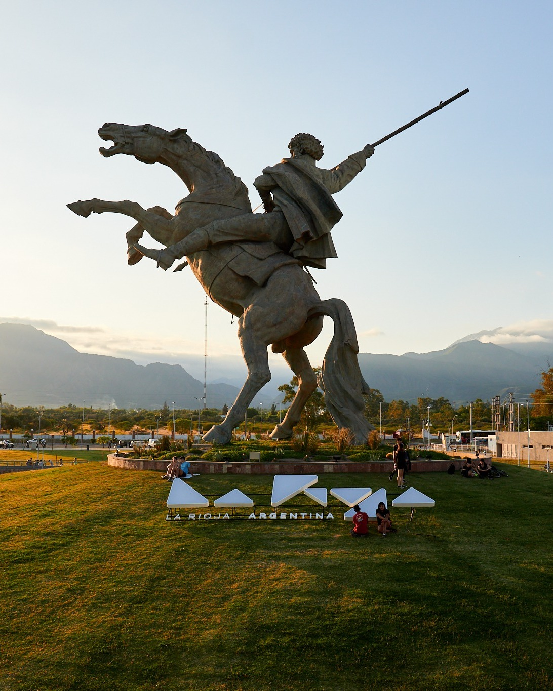
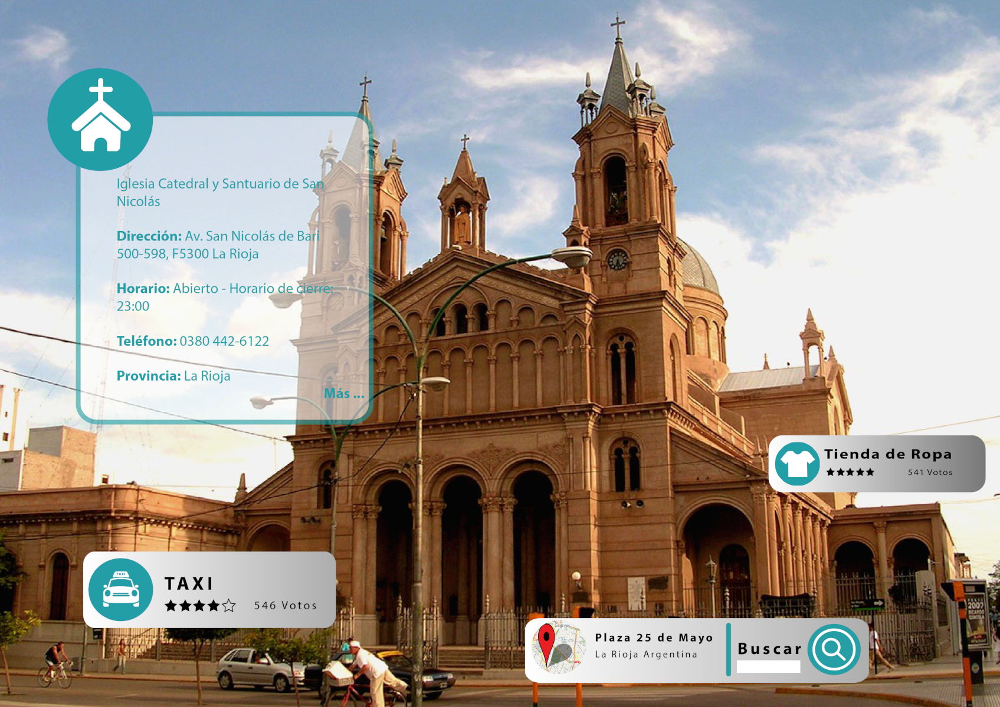
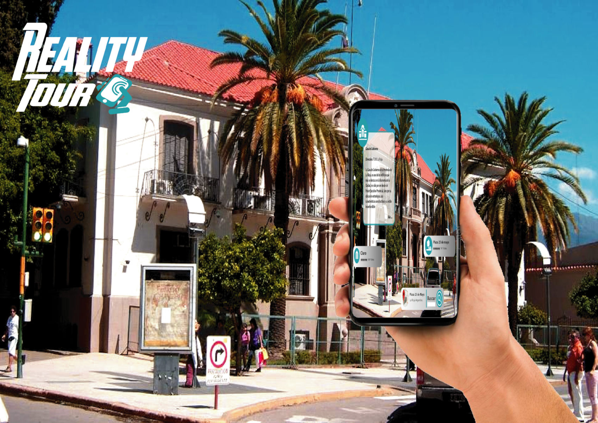
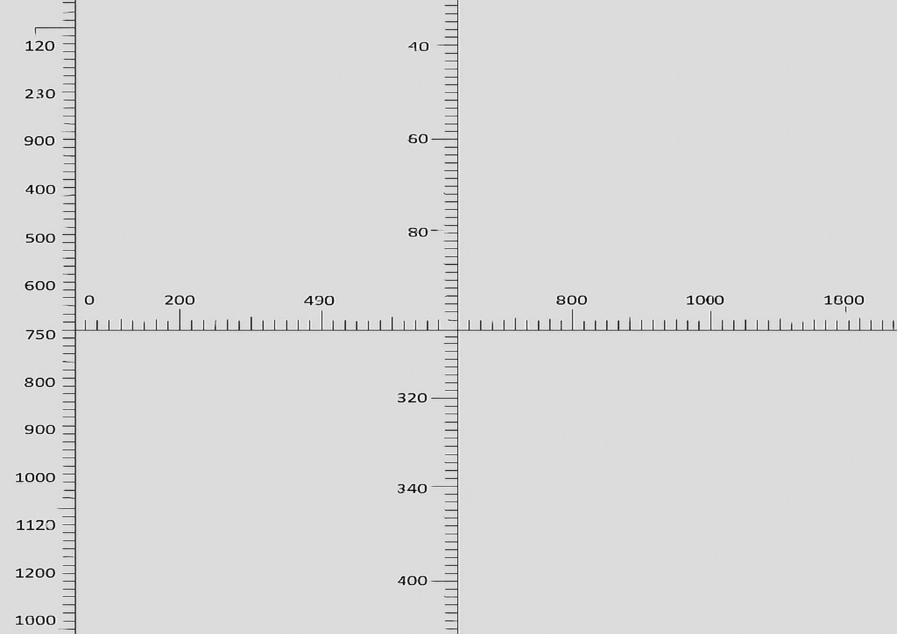

Realidad aumentada
La Realidad Aumentada (RA) es una forma de conectar el mundo digital con el real. A través de la cámara de tu dispositivo, podés descubrir objetos, historias y experiencias que se superponen con el entorno que te rodea.





01 / 05Imagen de prueba del carrusel



En RealityTour, la tecnología y el turismo se fusionan para ofrecerte una nueva forma de explorar.
Con la Realidad Aumentada, cada punto del mapa cobra vida y te invita a mirar el mundo con otros ojos.
Cada sitio se transforma en una historia viva, donde pasado y presente se unen para redescubrir la esencia de cada lugar.
Analista en Sistemas de Información y Consultor Atlassian. A lo largo de los años he aprendido a transformar requerimientos complejos en soluciones prácticas, ayudando a empresas a mejorar su productividad, optimizar procesos y generando valor para los equipos de distintos sectores. En RealityTour, combino mi experiencia técnica con mi pasión por la innovación para acercar la tecnología al turismo.
Analista en Sistemas de Información y profesional de QA, mi enfoque está en la calidad, la mejora continua y las buenas experiencias de usuario. A lo largo de mi carrera trabajé en proyectos internacionales que reforzaron mi compromiso con la precisión y la empatía. En RealityTour, busco que cada detalle funcione con la misma fluidez con la que las personas disfrutan descubrir nuevos lugares.